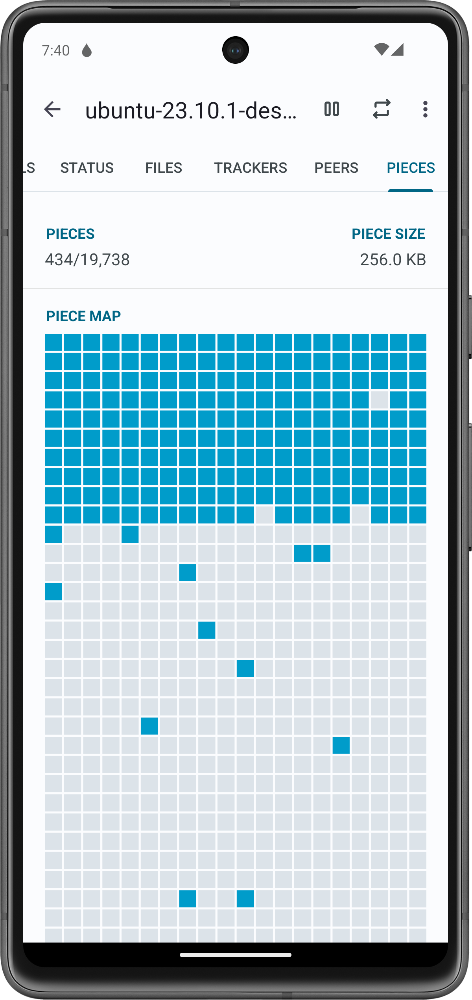

把 Flud 翻了个底朝天：五个藏得真深的冷门技巧
Flud 作为 Android 上最轻量的 BT 客户端之一，很多人只用它"添加种子然后等"。但它藏着几个几乎没人注意到的功能——VPN 绑定 Kill Switch、中途换存储位置、强制校验救废种……翻完设置目录才发现，这东西远不止下载器那么简单。
你以为 Flud 就是个"点加号、粘磁力、等下载"的工具？Flud的官网也只写了最基础的功能。我之前也是这么想的。用了快两年，一直停留在"能跑就行"的层面，直到某天为了查一个下载卡住的问题翻遍了设置目录，后来去flud文档补了一下才彻底搞明白——好家伙，这货藏的东西比我以为的多了去了。
下面说五个我自己用出来的、官方几乎不宣传的冷门技巧，要试的话先从flud下载拿个最新版。每个我都试过，讲清楚在哪开、怎么用、什么人真的需要。
一、VPN 绑定：比 VPN 自带 Kill Switch 靠谱多了
如果你用 VPN 上网，肯定见过这种情况：VPN 偶尔断那么一秒，BT 流量"嗖"地一下就从普通网络溜出去了——虽然只是一瞬间，但如果你的 ISP 会抓 BT 流量，那一秒就够留记录。
Flud 有个应用级 Kill Switch，藏得非常深：Settings → Security → Bind to。这个下拉列表会列出你手机上所有活跃的网络接口，包括 WiFi（wlan0）、移动数据（rmnet_data0 之类），还有 VPN 建立的隧道接口（通常是 tun0 或 wg0）。
把 Flud 绑到 VPN 隧道接口上，会发生什么：
- Flud 的所有 BT 流量只从这个接口出去，绝对走不到别的网络。
- VPN 隧道断了 → 接口消失 → Flud 自动停传所有种子，状态变成 "Network unavailable"。
- VPN 恢复 → 接口回来 → 下载自动续上。
这比 VPN 应用自带的 Kill Switch 好在哪？VPN 自带的 Kill Switch 是全局断网——它断了整个手机没网，浏览器、微信全断。Flud 的绑定是只杀自己，其他应用不受影响。我现在就这么用，WireGuard 连家里的 VPS，Flud 绑 wg0，隧道偶尔抖一下也不耽误我刷微博。
识别 VPN 接口有个小技巧：WireGuard 的接口名是按配置文件命名的（wg0、wg1），OpenVPN 是 tun0，IPsec 可能是 ppp0。拿不准的时候先连上 VPN，在 Flud 的 Bind to 里看哪个新冒出来，选它就对了。选错也没事——Flud 会下不了东西，不会炸手机。

二、中途换存储位置：下载到一半想搬去 SD 卡？
手机内部存储快满了，但种子才下了 60%，删了可惜、留着占空间？Flud 长按种子 → Move to，选一个新目录（比如 SD 卡里的某个文件夹），它会把已下载的数据整块搬过去，然后从断点继续下剩下的部分。
我上个月把一个 20G 的电视剧合集从内部存储搬到 128G 的 SD 卡，搬的过程中种子自动暂停，搬完自己恢复，没丢一个碎片、没重新校验。大文件搬的时间会比较长（20G 大概花了五分钟），但不用我手动搬运再重新校验，省事。
这个功能我问过好几个用 Flud 的朋友，没一个知道的——都以为只能删了重下。
三、强制校验：废种救星
下载到 90% 突然卡住不动了，速度 0、peers 还有好几个、tracker 也全绿？这时候长按种子 → Force recheck（强制校验），Flud 会从头扫描已下载的所有碎片，标记哪些是完整的、哪些是损坏或缺失的，然后从断点继续。
我碰到过好几次种子下到最后几百 MB 突然停住，怀疑是之前某次 VPN 切换的时候数据写坏了，Force recheck 跑一遍之后总能恢复速度。这个操作不会删除已下载的数据，放心用就行。
四、顺序下载：边下边播视频不卡
Flud 默认是随机下载——BT 协议的标准行为，swarm 里哪个碎片先来就拿哪个，整体效率最高。但如果你想一边下一边用播放器看视频，随机下载会导致播放器找不到连续的视频帧，要么卡要么跳。
Flud 在单个种子的设置里（不是全局）藏了一个开关：点击种子 → 详情页 → 右上角菜单 → Torrent settings → Sequential download（顺序下载）。打开之后 Flud 会从视频开头按序拉取碎片，播放器就能连续播放了。代价是整体下载速度可能略慢（10%~20%），但追剧的时候值。
注意这个开关是每个种子单独开的，不是全局。我之前找了好久全局开关在哪，原来它就藏在每个种子自己的设置菜单里。
五、文件优先级：合集里先下你想看的那几集
一个 BT 种子打包了整季电视剧、或者一个大型游戏的全部 DLC，里面可能有上百个文件。Flud 在添加种子的时候可以勾选要下哪些——这个很多人都知道。但下载过程中随时回来改勾选，还有给文件设优先级（High / Normal / Low），这两个功能用的人就少了。
操作：进入种子详情 → Files 标签 → 长按一个文件或文件夹 → Set priority。设为 High 的文件会被 Flud 优先调度碎片，不是速度更快，而是更早被拉取。设为 Low 的排最后。追剧党把前两集设 High，下完就看，后面慢慢补，体验好很多。
取消勾选的文件不会被继续下载，已经下载完的取消勾选也不会被删除——要删得手动来。重新勾选已取消的文件，从断点续传。

一个要注意的坑
VPN 绑定有个潜在问题：有些 VPN 应用每次重连会创建新的隧道接口名（tun0 → tun1 → tun2），这时候 Flud 之前绑的那个接口就消失了，下载会停掉。解决办法很简单——每次换节点或重连 VPN 之后，进 Flud 的 Bind to 重新选一下就行。WireGuard 用户没这个烦恼，它的接口名是固定的，按配置文件命名。
另外，绑定到 VPN 之后如果 Flud 连不上 peers，先别急着怀疑绑定——去浏览器试试能不能上网。有些 VPN 默认不支持端口转发，而 BT 入站连接需要开放端口，这时候要么在路由器上映射监听端口，要么换个支持端口转发的 VPN 服务商。
最后
Flud 可能是 Android 上功能最全但最不"张扬"的 BT 客户端了——很多功能藏得深到几乎看不见。上面这五个是我自己翻出来、日常真在用的，如果你用 Flud 也有一阵了，不妨回去翻翻 Settings 目录，说不定还能挖出别的。把它用透的感觉，和只用它"点加号等下载"，完全是两个工具。对了，上面这些资料在开源仓库也能找到，GitHub上有完整整理，国内用户访问Gitee和GitCode更顺。